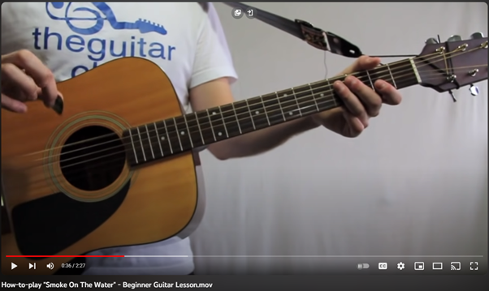
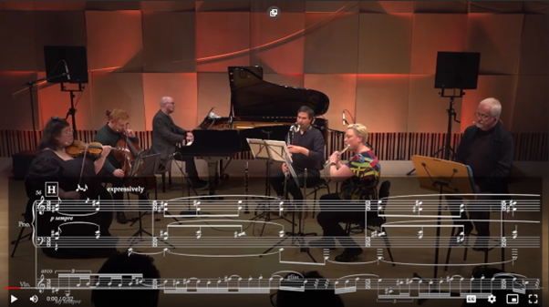
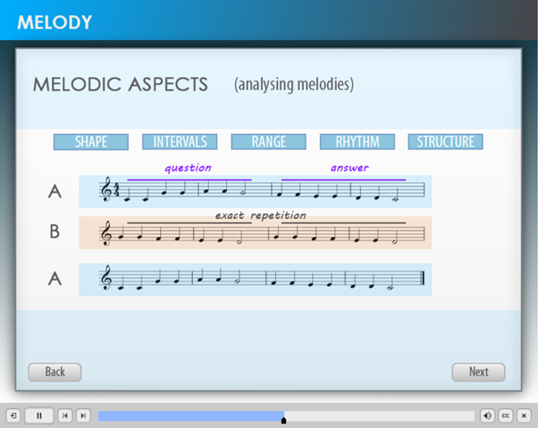

by Josh Milton
For most musicians, learning and growth is a lifelong process.
This learning often occurs as a member of communities of practice, through formal study at a secondary or tertiary level, private instruction with a tutor, or often through informal learning using platforms like Youtube. The online space is increasingly growing as a forum for musicians of all levels to share and acquire knowledge from one another (Waldron, 2013; Whitaker et al., 2014), with vast amounts of user-generated content being created each day.
Within the digital space, music education content takes many forms – from simple tutorials showing a learner how to play Smoke On The Water on their guitar, to rich video essays discussing niche musical concepts from the 14th century. While passion is often a common thread between all of this educational content, there is a lack of consensus into the most effective design of music education in a multimedia format.
|  | |
| Figure 1: A simple guitar tutorial | Figure 2: A long, complex video essay about a musical concept |
One large problem facing music educators is the lack of a streamlined, accessible, and viable way to create music multimedia content for use in educational settings. While many platforms exist for creation of interactive multimedia content, such as the H5P framework (H5P Group, n.d.), these platforms lack functionality which is key to authentic Music education. These platforms also still require ‘baking’ music notation into the source video itself (see Figure 3), or manual creation of interactive musical elements through coding (see Figure 4), reducing accessibility and increasing production costs.
|  |  |
| Figure 3: Baked-in Notation in Music Multimedia | Figure 4: Hard-Coded Music Multimedia |